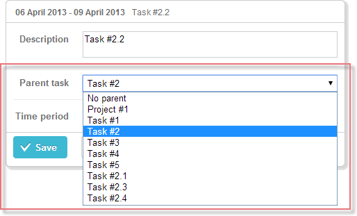

A select box for changing the parent of a task. The control loads all tasks presented in the Gantt chart but you can set filtering rules and the template of displayable values. Everything else is identical to Select Control.

gantt.config.lightbox.sections = [
{name:"description", height:38, map_to:"text", type:"textarea", focus:true},
{name:"parent", type:"parent", allow_root:"true", root_label:"No parent"}, {name:"time", height:72, type:"time", map_to:"auto"}
];
Related sample: Parent selector
To add the parent control to the lightbox, follow these steps:
1) Add a section to the lightbox configuration:
gantt.config.lightbox.sections = [
{name:"description", height:38, map_to:"text", type:"textarea",focus:true},
{name:"type", type:"typeselect", map_to:"type"}, {name:"time", height:72, type:"duration", map_to:"auto"}
];
2) Set a label for the section:
gantt.locale.labels["section_parent"] = "Parent task";
Related sample: Parent selector
The following properties are mostly important and commonly set for the parent control (see the full list here):
To filter options presented in the parent control, use the filter property:
Filtering. Displaying only tasks of the 1st level
gantt.config.lightbox.sections = [
{name:"description", height:38, map_to:"text", type:"textarea", focus:true},
{name:"parent", type:"parent", filter:function(id, task){ if(task.$level > 1){ return false; }else{ return true; } }},
{name:"time", height:72, type:"time", map_to:"auto"}
];
Related sample: Parent selector
The filter property sets a filtering function that takes 2 parameters:
and returns:
To sort options presented in the parent control, use the sort property:
Sorting tasks by the title's length
function sortByLength(a,b){
a = a.text.length();
b = b.text.length();
return a>b?1:(a<b?-1:0);
};
gantt.config.lightbox.sections = [
{name:"description", height:38, map_to:"text", type:"textarea", focus:true},
{name:"parent", type:"parent", sort:sortByLength}, {name:"time", height:72, type:"time", map_to:"auto"}
];
The sort property sets a sorting function that is called for each pair of adjacent values and return 1,-1 or 0:
To set the template of options in the parent control, use the template property:
gantt.config.lightbox.sections = [
{name:"description", height:38, map_to:"text", type:"textarea", focus:true},
{name:"parent", type:"parent", template(start,end,ev){ var title = ev.id+"."+ev.text; return title; }}, {name:"time", height:72, type:"time", map_to:"auto"}
];
The template property sets a function that takes 3 parameters:
and returns the template of options in the control.
If the 'template' property isn't specified, the format of options will be defined by the task_text template.